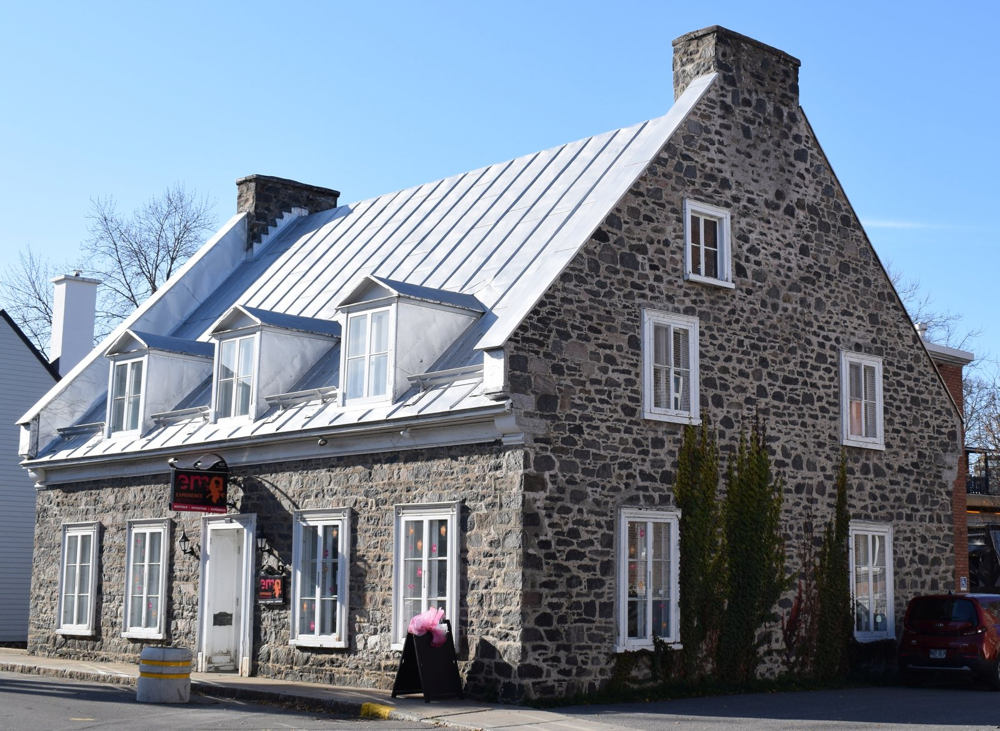

Well-to-do bourgeois house in stone and brick (maison cossue) La demeure bourgeoise / la résidence cossue

Maison Hertel-De La Fresnière, 802 rue des Ursulines, in the site patrimonial de Trois-Rivières (October 2020) — built 1824-1829, classed as an immeuble patrimonial; the RPCQ's own example of "des demeures bourgeoises en pierre". © Cantons-de-l'Est, Wikimedia Commons, CC BY-SA 4.0 — https://commons.wikimedia.org/wiki/File:Trois-Rivieres,_Quebec_-_802_rue_des_Ursulines_-_1.jpg
The merchant's house of a river town that had money before it had industry, standing back from the street behind mature trees on the thinnest-built edge of the old core. Stone in the first half of the nineteenth century, brick by the turn of the twentieth, always well clear of the ground and always symmetrical — the neoclassical order held on here longer than anywhere else in Québec, and when it finally loosened it did so into Second Empire mansards and eclectic crowns rather than into anything plainer.
English neoclassicism arrived with the British and Scottish military engineers and architects at the start of the nineteenth century, and the City's fiche notes that in Trois-Rivières it gave ground to eclecticism more slowly than elsewhere, even reviving early in the twentieth century as Beaux-Arts. Its bourgeois version is what the RPCQ means by "des maisons cossues", the first of the two residential registers it says characterise the declared site — the other being "des immeubles d'habitation construits sur des lots étroits". The same opulent-house form is described under `maison-cossue-ornamented` at Vieux-Terrebonne, where the declaration reads it off the rue Saint-Louis crest; here it is read off the terrasse Turcotte and rue des Ursulines.
| Tenure / plan | single-family |
|---|---|
| Storeys | 2–2.5 |
| Roof form | gabled-or-hipped |
| Roof pitch | – |
| Window proportion | vertical |
| Principal cladding | stone, cut-stone, clay-brick |
| Roofing | traditional tin; copper on the grandest |
| Garage | none |
| Lot width | – |
| Front setback | – |
| Side setback | – |
| Front yard green | – |
What Ville de Trois-Rivières says about this type
- Le XIXe siècle est représenté par des demeures bourgeoises en pierre, comme la maison Hertel-De La Fresnière (1824-1829) et celles qui longent la terrasse Turcotte.
- les bâtiments témoignant de la fonction résidentielle au XIXe siècle, entre autres les résidences bourgeoises de styles variés (néoclassique, Second Empire et georgien)
- Cette unité de paysage est formée de bâtiments individuels de type résidentiel et regroupe surtout des résidences cossues datant du tournant du XXe siècle… Les résidences présentent des caractéristiques architecturales homogènes en ce qui a trait au volume, à la hauteur et aux matériaux. Les résidences individuelles en brique à deux niveaux d'habitation prédominent dans cette unité.
- Along the terrasse Turcotte and rue des Ursulines, where the declared site's occupation is at its thinnest — the RPCQ contrasts "la faible densité d'occupation en bordure de la rue des Ursulines et de la terrasse Turcotte" with the smaller, more densely built lots of rues Saint-Pierre, Saint-François-Xavier, Saint-Louis and des Casernes.
- Deeper front margins than in the institutional blocks, and a marked tree cover, in the Plan de conservation's unité de paysage of "maisons urbaines individuelles".
- The grandest georgian houses stand alone in the middle of a large lot.
- Rectangular body well clear of the ground, two or two and a half storeys.
- Two- or four-slope roof of medium or shallow pitch; mansard roofs on the Second Empire examples.
- Monumental in effect rather than in size; the Plan de conservation calls the group homogeneous in volume, height and material.
- Few or no projecting elements such as balconies and galleries in the neoclassical register; on the Second Empire and eclectic examples, a projecting central bay marking the entrance, turrets, and polygonal projections.
- Corps de bâtiment rectangulaire bien dégagé du sol, à un ou deux étages
- Peu ou pas d'éléments en saillie tels les balcons, galeries
- Toiture à deux ou à quatre versants de pente moyenne ou faible
- Order, symmetry and sobriety are the three watchwords of the neoclassical register — regularity in the plan as much as in the distribution of the openings, sometimes to the point of austerity.
- Classical ornament drawn from antiquity — pediment, round arch over the openings, columns, piers, pilasters, quoins, cornice returns.
- On the eclectic examples, an elaborate crown — cornices on consoles and modillions, carved lintels, worked cornices, dormers under semicircular pediments.
- Main entrance marked by a porch or a portal.
- Ornements classiques variés : fronton, arc en plein cintre au-dessus des ouvertures, colonnes, piliers, pilastres, chaînage d'angle, retour de corniche
- Casement or sash windows, with panes.
- Round-arched doors and windows and oculi in the palladian register; segmental-arched openings on the later ones.
- Symmetrical arrangement of openings and chimneys, the English signature on a house otherwise French in its siting and roof.
- Ordonnance, symétrie et sobriété dans les compositions et la distribution des ouvertures
- Fenêtre à battants ou à guillotine, à carreaux
- Entrée principale soulignée par un porche ou un portail
- Smooth wall surfaces — cut stone, roughcast, brick or wood boards.
- Stone in the earlier houses; the Plan de conservation records that the declared site's ten stone buildings include the classed houses, and that only two stone dwellings postdate 1900.
- Brick predominates in the turn-of-the-century group, which the Plan de conservation describes as "résidences individuelles en brique à deux niveaux d'habitation".
- Copper roofing on at least one — the house of about 1850 at 858 terrasse Turcotte.
- Revêtements lisses : pierre de taille, crépi, brique ou planches de bois
- Trois-Rivières compte également plusieurs maisons georgiennes. Ces résidences monumentales constituent un style néoclassique assez pur, proche de modèles du nord-est des États-Unis : grandes maisons à deux étages et demi, de composition symétrique, avec retours de corniche amorçant des frontons. Ces maisons de briques se dressent toujours seules au centre d'un terrain vaste.
- L'architecture palladienne est caractéristique de l'austérité néoclassique. Elle présente en effet une ordonnance irréprochable et une parfaite symétrie. Il est fréquent d'y voir un avant-corps central et un porche ouvert à fronton coiffé d'un toit en pavillon. Ses composantes distinctives sont les portes et fenêtres réalisées en arc en plein cintre, la présence d'oculi et un parement en pierre de taille.
- Le cottage Regency arbore une architecture en communion avec son environnement. Parmi ses principales caractéristiques, on note le profil bas de la toiture à quatre versants dont les avant-toits se prolongent au-delà des murs et recouvrent une galerie ceinturant le carré de la maison.
This record is assembled, not transcribed. The City publishes no fiche for a "maison cossue" — the term is the ministry's, used in the RPCQ fiche and in the Plan de conservation's unité de paysage "les maisons urbaines individuelles". The five columns therefore take their architectural detail from the City's Néoclassicisme fiche, which is the courant the RPCQ names first for these houses, and their siting and material detail from the two ministerial documents. The phase is provisional because the sources straddle two of them: the RPCQ places the stone bourgeois houses in the nineteenth century, with the maison Hertel-De La Fresnière at 1824-1829, while the Plan de conservation's cossues date "du tournant du XXe siècle". The RPCQ names three registers for these houses — "néoclassique, Second Empire et georgien" — and the third has no style id in this project; it is recorded verbatim above instead of being forced into one.
- Avoid: cladding and roofing materials on the house and its dormers, and railing patterns, that do not answer to the noble character of this architecture.
- Avoid: the combination that has stripped one such house of all its attributes — replacement cladding, replacement window and door models, and unsuitable railings, applied together while the overall composition was respected.
- Le choix des matériaux revêtant les lucarnes et la toiture ainsi que le choix du modèle de garde-corps ne conviennent pas à cette architecture au caractère noble.
- Cette résidence aux influences néoclassiques a malheureusement perdu l'ensemble de ses attributs par le recours à des matériaux de revêtement, des modèles de fenêtres et de portes, ainsi qu'à des garde-corps inappropriés.
Same word elsewhere
- Rural house of French inspiration (Charlesbourg (Trait-Carré))
- Québec house of neoclassical inspiration (Charlesbourg (Trait-Carré))
- Mansard house (Charlesbourg (Trait-Carré))
- Industrial vernacular house (Charlesbourg (Trait-Carré))
- Mansard-roofed house with gable wall on the façade (maison à toit mansardé avec mur pignon en façade) (Gatineau)
- Wood matchstick house of two to two and a half storeys (maison allumette en bois de deux à deux étages et demi) (Gatineau)
- L-plan house with a two-slope (gable) roof (maison avec plan en L à toit à deux versants) (Gatineau)
- English-revival stone house (Hampstead)
- Postwar detached house (Hampstead)
- House of French inspiration (Île d'Orléans)
- Traditional Québec house of neoclassical influence (Île d'Orléans)
- Second Empire style and the mansard house (Île d'Orléans)
- Boomtown house (Île d'Orléans)
- Franco-Québécois transitional house (Lévis)
- Québécois traditional house (Lévis)
- Neoclassical house (Lévis)
- Second Empire house (Lévis)
- Victorian house (Lévis)
- American vernacular house (Lévis)
- Beaux-Arts house (Lévis)
- Boomtown house (Lévis)
- Flat-roofed house (Lévis)
- Garden City House (Town of Mount Royal)
- Faubourg House (Town of Mount Royal)
- Canadian House (Town of Mount Royal)
- New England House (Town of Mount Royal)
- Georgian House (Town of Mount Royal)
- English Manor House (Town of Mount Royal)
- Prairie House (Town of Mount Royal)
- Semi-detached single-family house (Outremont (borough of Montréal))
- Detached single-family house (Outremont (borough of Montréal))
- Faubourg house (Le Plateau-Mont-Royal (borough of Montréal))
- Detached urban house (Le Plateau-Mont-Royal (borough of Montréal))
- Row urban house (Le Plateau-Mont-Royal (borough of Montréal))
- One-storey rural house of French inspiration (Québec City)
- Urban stone house of French inspiration (Québec City)
- Franco-Québécois transition house (Québec City)
- London-type terrace house (Québec City)
- Québécois neoclassical house (Québec City)
- Mansard-roofed house (Québec City)
- Rudimentary faubourg house (Québec City)
- Flat-roofed faubourg house (Québec City)
- Neo-Queen Anne house (Québec City)
- Neo-Tudor house (Québec City)
- Arts and Crafts house (Québec City)
- Dutch Colonial Revival house (Québec City)
- Neo-Georgian house (Québec City)
- Traditional French and Québécois house (Saint-Lambert)
- Mansard-roofed house of Second Empire influence (Saint-Lambert)
- Queen Anne style house (Saint-Lambert)
- Boomtown house with false mansard (Saint-Lambert)
- Boomtown house with crown (parapet or cornice) (Saint-Lambert)
- Cubic (Four Square) house (Saint-Lambert)
- House of Arts and Crafts influence (Saint-Lambert)
- Stone house in the French tradition (Vieux-Terrebonne)
- Neoclassical Québécois stone house (Vieux-Terrebonne)
- Small-gabarit vernacular village house of the Bas-de-la-Côte (Vieux-Terrebonne)
- French-regime house in stone (colonial français) (Trois-Rivières)
- Boomtown house (Trois-Rivières)
- Arts & Crafts house (Trois-Rivières)
- Picturesque villa and country house (Westmount)
- Greystone row house (Westmount)
- Mansard-roofed house of Second Empire influence (Westmount)
- Queen Anne house (Westmount)
- Richardsonian Romanesque house (Westmount)
- Semi-detached brick house (Westmount)
- Eclectic prestige house of the summit (Westmount)
- Tudor Revival house (Westmount)
- Arts and Crafts semi-detached house (Westmount)
- Interwar apartment house (Westmount)
Same form elsewhere
- Maison cossue of rue Saint-Louis (Vieux-Terrebonne)
Same period elsewhere
- Québec house of neoclassical inspiration (Charlesbourg (Trait-Carré))
- Mansard house (Charlesbourg (Trait-Carré))
- Boomtown building (Charlesbourg (Trait-Carré))
- Cubic house (Four Square) (Charlesbourg (Trait-Carré))
- Industrial vernacular house (Charlesbourg (Trait-Carré))
- Vernacular cottage (Charlesbourg (Trait-Carré))
- Mixed-use building with a flat roof (édifice mixte à toit plat) (Gatineau)
- Side-gable duplex (duplex à mur pignon latéral) (Gatineau)
- Central-gable house (maison à pignon central) (Gatineau)
- Complex gabled-roof house (maison à toit complexe à pignon) (Gatineau)
- Mansard-roofed house with gable wall on the façade (maison à toit mansardé avec mur pignon en façade) (Gatineau)
- One-and-a-half-storey wooden matchstick house (maison allumette en bois d'un étage et demi) (Gatineau)
- Wood matchstick house of two to two and a half storeys (maison allumette en bois de deux à deux étages et demi) (Gatineau)
- Brick matchbox house, two to two and a half storeys (maison allumette en brique de deux à deux étages et demi) (Gatineau)
- Cubic house (maison cubique) (Gatineau)
- Flat-roofed wood house (maison en bois à toit plat) (Gatineau)
- Flat-roofed brick house (maison en brique à toit plat) (Gatineau)
- L-plan house with a two-slope (gable) roof (maison avec plan en L à toit à deux versants) (Gatineau)
- Regency cottage (Île d'Orléans)
- Second Empire style and the mansard house (Île d'Orléans)
- Victorian eclecticism (Île d'Orléans)
- American vernacular cottage (Île d'Orléans)
- Arts and Crafts architecture (Île d'Orléans)
- Boomtown house (Île d'Orléans)
- Cubic house (Four Square) (Île d'Orléans)
- Franco-Québécois transitional house (Lévis)
- Québécois traditional house (Lévis)
- Regency cottage (Lévis)
- Neo-Gothic (Lévis)
- Neoclassical house (Lévis)
- Agricultural vernacular building (Lévis)
- Second Empire house (Lévis)
- Victorian house (Lévis)
- American vernacular house (Lévis)
- Mixed-use or commercial building (Lévis)
- Beaux-Arts house (Lévis)
- Boomtown house (Lévis)
- Cubic house (maison cubique) (Lévis)
- Flat-roofed house (Lévis)
- Arts & Crafts house (Arts & métiers) (Lévis)
- Garden City House (Town of Mount Royal)
- Faubourg House (Town of Mount Royal)
- Faubourg Apartment Block (Town of Mount Royal)
- Semi-detached single-family house (Outremont (borough of Montréal))
- Semi-detached duplex (Outremont (borough of Montréal))
- Detached single-family house (Outremont (borough of Montréal))
- Faubourg house (Le Plateau-Mont-Royal (borough of Montréal))
- Detached urban house (Le Plateau-Mont-Royal (borough of Montréal))
- Duplex without front setback (Le Plateau-Mont-Royal (borough of Montréal))
- Duplex with front setback (Le Plateau-Mont-Royal (borough of Montréal))
- Duplex with exterior stair (Le Plateau-Mont-Royal (borough of Montréal))
- Triplex with interior stair (Le Plateau-Mont-Royal (borough of Montréal))
- Triplex with exterior stair (Le Plateau-Mont-Royal (borough of Montréal))
- Multiplex (Le Plateau-Mont-Royal (borough of Montréal))
- Row urban house (Le Plateau-Mont-Royal (borough of Montréal))
- Apartment block without courtyard (Le Plateau-Mont-Royal (borough of Montréal))
- Apartment block with courtyard (Le Plateau-Mont-Royal (borough of Montréal))
- Small apartment building (Le Plateau-Mont-Royal (borough of Montréal))
- Neo-Gothic house, villa or cottage (Québec City)
- Québécois neoclassical house (Québec City)
- Regency cottage (Québec City)
- Regency villa (Québec City)
- Mansard-roofed house (Québec City)
- Rudimentary faubourg house (Québec City)
- Boomtown house and shop-house (Québec City)
- Cubic house (Four Square) (Québec City)
- Flat-roofed faubourg house (Québec City)
- Industrial-vernacular cottage (Québec City)
- Neo-Queen Anne house (Québec City)
- Neo-Renaissance house and mixed-use block (Québec City)
- Neo-Tudor house (Québec City)
- Plex — superposed dwellings (Québec City)
- Mansard-roofed house of Second Empire influence (Saint-Lambert)
- Queen Anne style house (Saint-Lambert)
- Boomtown house with false mansard (Saint-Lambert)
- Boomtown house with crown (parapet or cornice) (Saint-Lambert)
- Cubic (Four Square) house (Saint-Lambert)
- House of Arts and Crafts influence (Saint-Lambert)
- Multi-dwelling building of plex type (Saint-Lambert)
- Lower-town company house (Ross and Macdonald, 1918–1923) (Témiscaming)
- Maison cossue of rue Saint-Louis (Vieux-Terrebonne)
- Neoclassical Québécois stone house (Vieux-Terrebonne)
- Small-gabarit vernacular village house of the Bas-de-la-Côte (Vieux-Terrebonne)
- Picturesque villa and country house (Westmount)
- Greystone row house (Westmount)
- Greystone triplex with exterior stair (Westmount)
- Mansard-roofed house of Second Empire influence (Westmount)
- Queen Anne house (Westmount)
- Richardsonian Romanesque house (Westmount)
- Semi-detached brick house (Westmount)
- Eclectic prestige house of the summit (Westmount)
- Tudor Revival house (Westmount)
- Arts and Crafts semi-detached house (Westmount)
- Interwar apartment house (Westmount)
Same style elsewhere
- Québec house of neoclassical inspiration (Charlesbourg (Trait-Carré))
- Mansard house (Charlesbourg (Trait-Carré))
- Central-gable house (maison à pignon central) (Gatineau)
- Mansard-roofed house with gable wall on the façade (maison à toit mansardé avec mur pignon en façade) (Gatineau)
- Traditional Québec house of neoclassical influence (Île d'Orléans)
- Second Empire style and the mansard house (Île d'Orléans)
- Victorian eclecticism (Île d'Orléans)
- Franco-Québécois transitional house (Lévis)
- Québécois traditional house (Lévis)
- Neoclassical house (Lévis)
- Second Empire house (Lévis)
- Victorian house (Lévis)
- Detached urban house (Le Plateau-Mont-Royal (borough of Montréal))
- Duplex without front setback (Le Plateau-Mont-Royal (borough of Montréal))
- Duplex with front setback (Le Plateau-Mont-Royal (borough of Montréal))
- Row urban house (Le Plateau-Mont-Royal (borough of Montréal))
- Franco-Québécois transition house (Québec City)
- London-type terrace house (Québec City)
- Québécois neoclassical house (Québec City)
- Mansard-roofed house (Québec City)
- Rudimentary faubourg house (Québec City)
- Neo-Queen Anne house (Québec City)
- Traditional French and Québécois house (Saint-Lambert)
- Mansard-roofed house of Second Empire influence (Saint-Lambert)
- Boomtown house with false mansard (Saint-Lambert)
- Maison cossue of rue Saint-Louis (Vieux-Terrebonne)
- Neoclassical Québécois stone house (Vieux-Terrebonne)
- The 1908 reconstruction block — brick, flat-roofed, built all at once (Trois-Rivières)
- Greystone row house (Westmount)
- Mansard-roofed house of Second Empire influence (Westmount)